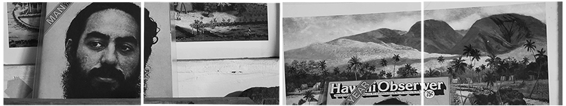

11 February 2024
My Introduction to Political Thought course is increasingly tied to the visual, the aural, and the social. In this sense, we read Pablo Helguera's Education for Socially Engaged Art in place of related political texts, such as Jacques Rancière's The Ignorant Schoolmaster, to consider possible forms of social engagement that overturn some of the hierarchies advanced in Plato early in the semester. For this class, they sent me around the city in search of images to continue recorded conversations they start in the classroom. It's kind of like a "dialogue," with the reimagination of participation that Helguera addresses as conversation. In any case, I like the book as a starting point for thinking through many group projects my students have organized over the years, but also that the entire spectrum of socially-engaged art literature is translated into Japanese.
24 March 2023
Filming for Sovereign continues as we seek to frame sovereignty in the context of a kind of subterreanean temporality layered within the present. At Mokuʻula, the site where tradition was enshrined along the constitutional cusp of a new modernity, we listen to the ground amid the ruins of a large baseball field. This revered corridor of time persists even amid Pioneer MIllʻs struggle to eliminate signs of the past.
21 February 2023
In the morning, we conduct an interview with Uncle Sam Kaʻai. Mayor Richard Bissen visits weekly "ʻŌlelo Night" at Nā ʻĀikane o Maui. Well-known kumu Ekela Kaniaupio-Crozier gives a fascinating presentation on the politics of the Hawaiian language. Mayor Bissen gives overview and Q&A session on the Nākoa yacht.
16 February 2023
Production begins for
Sovereign
, a film about Keʻeaumoku Kapu and the kuleana lands of Kauaʻula, Maui. We visit the Launiupoko subdivision to capture the ways new development threatens the land and water rights of kuleana tenants in Kauaula valley. In the afternoon we visit the Kapu kuleana lands awarded as a Land Commision Award during the "mahele" land division of the mid-19th century.
14 January 2023
Clean-up activity at Malu'ulu o Lele Park (sponsored by Nā ʻĀikane O Maui). Well-known kumu Ekela Kaniaupio-Crozier gives a fascinating presentation on the politics of the Hawaiian language. Mayor Bissen gives overview and Q&A session on the Nākoa yacht.
22 March 2022
Honolulu band
Gondola
head to a
Kaka`ako studio
to record a new album.
18 November 2021
The Thai student group AUTOnomia considers how art transforms education in small participatory acts.
VIDEO/ภาษาไทย
14 October 2021
In Thailand, a youth culture rejuvenated by art are calling for an overhaul of the post-Coup system established in the military restructuring of power since September 19th 2006.
 PROJECTS
ABOUT
SOCIAL PRACTICE
RESEARCH
PROJECTS
ABOUT
SOCIAL PRACTICE
RESEARCH